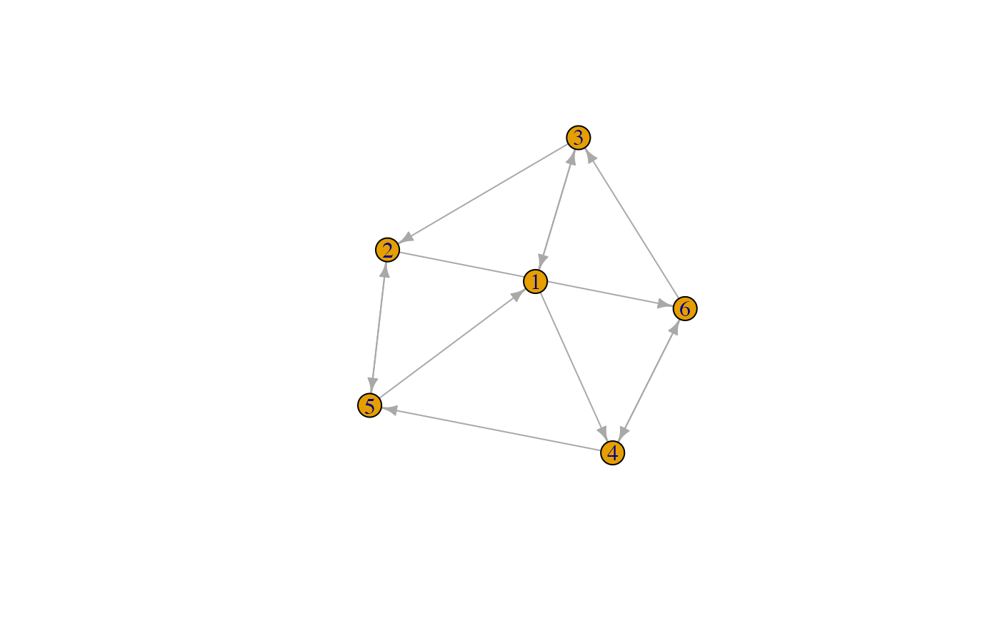
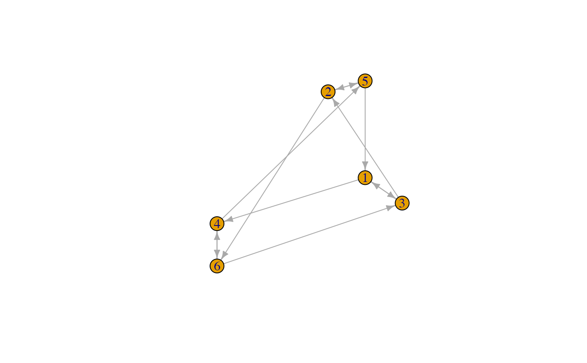

Coerce objects to class reeb_graph
as_reeb_graph.RdCoerce objects to [reeb_graph]-class objects.
Usage
as_reeb_graph(x, ...)
# S3 method for class 'igraph'
as_reeb_graph(x, values = NULL, names = NULL, ...)
# S3 method for class 'network'
as_reeb_graph(x, values = NULL, names = NULL, ...)
as_igraph(x, ...)
# S3 method for class 'reeb_graph'
as_igraph(x, values = "value", names = "name", ...)
as_network(x, ...)
# S3 method for class 'reeb_graph'
as_network(x, values = "value", names = "vertex.names", ...)Arguments
- x
An R object to be coerced. See Details.
- ...
Additional arguments passed to methods.
- values
For coercion to class
reeb_graph, a character value; the node attribute to use as the Reeb graph value function. IfNULL(the default), the first numeric node attribute is used. For coercion from classreeb_graph, a character value; the name of the node attribute in which to store the Reeb graph value function.- names
For coercion to class
reeb_graph, a character value; the node attribute to use as the Reeb graph node names. IfNULL, names are omitted. For coercion from classreeb_graph, a character value; the name of the node attribute in which to store the Reeb graph node names.
Value
A reeb_graph object.
Details
The as_reeb_graph() methods require a network (mathematical graph)
structure and a real-valued function on the vertex set.
For coercion between external network classes, use the intergraph
package.
Examples
library(igraph)
#>
#> Attaching package: ‘igraph’
#> The following objects are masked from ‘package:stats’:
#>
#> decompose, spectrum
#> The following object is masked from ‘package:base’:
#>
#> union
( g <- make_kautz_graph(2, 1) )
#> IGRAPH b68061f D--- 6 12 -- Kautz graph 2-1
#> + attr: name (g/c), m (g/n), n (g/n)
#> + edges from b68061f:
#> [1] 1->3 1->4 2->5 2->6 3->1 3->2 4->5 4->6 5->1 5->2 6->3 6->4
l_g <- layout_with_fr(g)
plot(g, layout = l_g)

( rg <- as_reeb_graph(g, l_g[, 1]) )
#> Reeb graph with 6 vertices and 12 edges on [-0.1062215,1.416511]:
#> 1 ( 0.69397878) -- 3 ( 0.90169156)
#> 1 ( 0.69397878) -- 4 ( 1.06662810)
#> 2 (-0.02012786) -- 5 (-0.10622145)
#> 2 (-0.02012786) -- 6 ( 1.41651091)
#> 3 ( 0.90169156) -- 1 ( 0.69397878)
#> 3 ( 0.90169156) -- 2 (-0.02012786)
#> 4 ( 1.06662810) -- 5 (-0.10622145)
#> 4 ( 1.06662810) -- 6 ( 1.41651091)
#> 5 (-0.10622145) -- 1 ( 0.69397878)
#> 5 (-0.10622145) -- 2 (-0.02012786)
#> 6 ( 1.41651091) -- 3 ( 0.90169156)
#> 6 ( 1.41651091) -- 4 ( 1.06662810)
#>
vertex_attr(g, "height") <- rg$value
heights <- sort(unique(V(g)$height))
l_rg <- layout_with_sugiyama(g, layers = round(V(g)$height * 100))
plot(g, layout = l_rg)

library(network)
#>
#> ‘network’ 1.19.0 (2024-12-08), part of the Statnet Project
#> * ‘news(package="network")’ for changes since last version
#> * ‘citation("network")’ for citation information
#> * ‘https://statnet.org’ for help, support, and other information
#>
#> Attaching package: ‘network’
#> The following objects are masked from ‘package:igraph’:
#>
#> %c%, %s%, add.edges, add.vertices, delete.edges, delete.vertices,
#> get.edge.attribute, get.edges, get.vertex.attribute, is.bipartite,
#> is.directed, list.edge.attributes, list.vertex.attributes,
#> set.edge.attribute, set.vertex.attribute
data("emon")
mtsi <- emon$Cheyenne
mtsi_reeb <- as_reeb_graph(
mtsi,
values = "Command.Rank.Score",
names = "vertex.names"
)
print(mtsi_reeb, minlength = 24)
#> Reeb graph with 14 vertices and 83 edges on [0,40]:
#> 2[W.S.N.G..] (10) -- 1[W.D..C.D.] ( 0)
#> 3[Wym.S.H.P] ( 3) -- 1[W.D..C.D.] ( 0)
#> 8[L.C...C.C] (40) -- 1[W.D..C.D.] ( 0)
#> 9[Chynn.F.D] (10) -- 1[W.D..C.D.] ( 0)
#> 14[S.W.HAM.R] ( 0) -- 1[W.D..C.D.] ( 0)
#> 1[W.D..C.D.] ( 0) -- 2[W.S.N.G..] (10)
#> 3[Wym.S.H.P] ( 3) -- 2[W.S.N.G..] (10)
#> 4[F.E..W.A.] ( 5) -- 2[W.S.N.G..] (10)
#> 8[L.C...C.C] (40) -- 2[W.S.N.G..] (10)
#> 1[W.D..C.D.] ( 0) -- 3[Wym.S.H.P] ( 3)
#> 2[W.S.N.G..] (10) -- 3[Wym.S.H.P] ( 3)
#> 4[F.E..W.A.] ( 5) -- 3[Wym.S.H.P] ( 3)
#> ...